מדריך תפעול מתקדם - מעבדת חשמל
רב-מודד דיגיטלי (DMM - Digital Multimeter) הוא מכשיר מדידה רב-תכליתי המסוגל למדוד מתח, זרם והתנגדות. לרב-מודד יש בדרך כלל מספר זוגות הדקים נפרדים, ותמיד קיים הדק משותף בשם COMMON, המסומן לרוב בצבע שחור. זוג הדקים אחד משמש למדידת מתח והתנגדות, ואילו הדקים נוספים משמשים למדידות זרם בטווחים שונים.
דגם GDM-8341 הוא רב-מודד ספרתי מתקדם המציע דיוק של 50,000 ספרות ותצוגה כפולה ברורה. המכשיר מתאים למדידות מדויקות של רכיבים אלקטרוניים ומעגלים מורכבים.
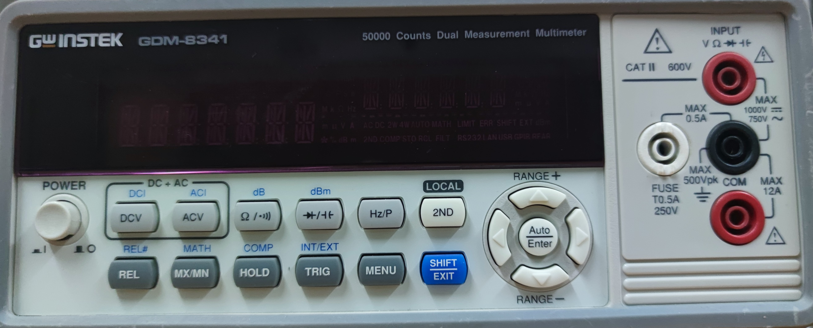
| כפתור | פונקציה עיקרית | מידע נוסף |
|---|---|---|
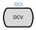 |
מתח DC | מדידת ערך ממוצע של אות DC. |
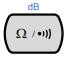 |
התנגדות / מוליכות | לחיצה נוספת עוברת למדידת מוליכות. |
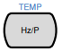 |
תדר / מחזור אות | לחיצה נוספת מציגה את זמן המחזור (Period). |
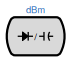 |
דיודה / קיבול | מעבר בין בדיקת דיודות למדידת קיבול (Capacitance). |
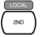 |
תצוגה משנית (Dual Display) | מאפשר הצגת שתי מדידות בו-זמנית (למשל מתח ותדר). |
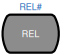 |
מדידה יחסית (REL) | שומר ערך ייחוס ומחסיר אותו מהמדידות הבאות (קיזוז). |
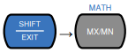 |
חישובים מתמטיים (MATH) | ביצוע חישובים כמו \( MX+B \), \( 1/X \) או אחוז סטייה. |
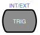 |
טריגר (TRIG) | ביצוע מדידה בודדת באופן ידני. |
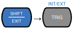 |
מקור טריגר (INT/EXT) | החלפה בין דגימה רציפה למצב ידני/חיצוני. |
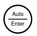 |
Auto / Enter | בחירת טווח אוטומטית או אישור ערך בתפריט. |